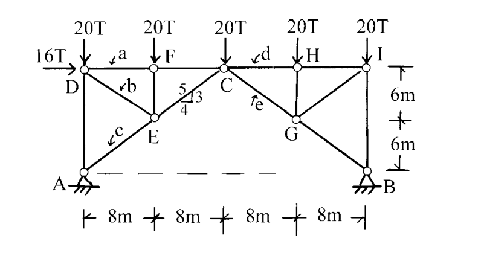
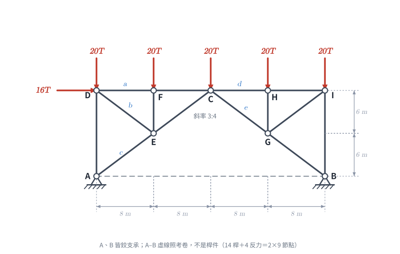

📄 題目正本（考卷原文、附圖與判讀清單；不含解法）
SA-2002-2 題目正本
本檔只記錄考卷上寫了什麼、圖上畫了什麼，不含任何解法。解析見同資料夾
SA-2002-2.md。
判讀清單經使用者確認前，狀態為「待確認」；確認後本檔原則上不再修改（改動須回考卷原圖並記 log）。
| 項目 | 內容 |
|---|---|
| 考卷 | raw/exams/SA-2002_結構學.pdf，第 1 頁（全一頁），第二題 |
| 考年 | 2002（民國九十一年）專技高考結構工程技師「結構學」 |
| 配分 | 25 分（每小題 5 分） |
| 附圖 | SA-2002-2-fig-1.png |
| 判讀狀態 | 已確認（2026-11-05 使用者確認；影響答案項目定案：#3 B 為鉸支承、#5 A–B 虛線不是桿件（使用者確認）。原轉錄：2026-11-05 轉錄；PyMuPDF 110 dpi 整頁＋350–1000 dpi 局部放大；盲讀於開啟解析前完成） |
1. 考卷原文（逐字）
二、如圖所示之桁架，在圖示之荷重作用時，試求桿件 a、b、c、d、e 之軸力（標明拉力或壓力）。（每小題 5 分，共 25 分）
2. 考卷給的公式、附表與參數
- 考卷沒有給任何參考公式或附表。
- 力的單位為 T（噸）；考卷沒有給 EA（靜定桁架不需要）。
- 卷首注意事項：㈠可以使用電子計算器，使用電子計算器計算之試題，需詳列解答過程。㈡不必抄題，作答時請將試題題號及答案依照順序寫在試卷上，於本試題上作答者，不予計分。
- 考試時間：二小時。
3. 附圖

證據圖 SA-2002-2-fig-1.png
圖面文字照錄：20T（×5）、16T、a、F、d、H、I、D、b、5、3、4、C、e、6m、6m、c、E、G、A、B、8m、8m、8m、8m
4. 判讀清單
| # | 項目 | 判讀 | 圖上／題文依據 | 把握 |
|---|---|---|---|---|
| 1 | 座標（以 A 為原點） | A(0,0)、B(32,0)；D(0,12)、F(8,12)、C(16,12)、H(24,12)、I(32,12)；E(8,6)、G(24,6) | 下方 4×8 m、右側 6m｜6m 尺寸線 | 確定 |
| 2 | 桿件 | DA、IB 豎桿；上弦 DF、FC、CH、HI；DE、FE、EC、AE；CG、HG、GI、GB；共 14 桿 | 400 dpi 圖面 | 確定 |
| 3 | A–B 虛線 | 不是桿件（虛線，僅示意 A、B 同高） | 圖上為虛線 | 確定（解讀）；使用者確認 |
| 4 | 斜率 5-3-4 | 標在 E–C 桿，A–E–C 為同一直線方向（3:4） | E(8,6)→C(16,12)；A(0,0)→E(8,6) | 確定 |
| 5 | 支承 A、B | 皆為鉸支承（三角形＋剖線） | 圖上符號 | 確定 |
| 6 | 靜定性 | j = 9、m = 14、r = 4，2j = m + r | 計數 | 確定 |
| 7 | 桿 a | D–F（上弦第一格） | a 標在 D–F 上方，旁有指向箭頭 | 確定 |
| 8 | 桿 b | D–E | b 標在 D–E 中段 | 確定 |
| 9 | 桿 c | A–E | c 標在 A–E 中段 | 確定 |
| 10 | 桿 d | C–H | d 標在 C–H 上方 | 確定 |
| 11 | 桿 e | C–G | e 標在 C–G 中段 | 確定 |
| 12 | 載重 | D、F、C、H、I 各 20T 向下；D 點 16T 水平向右 | 箭頭 | 確定 |
| 13 | 所求 | a、b、c、d、e 軸力並標拉壓 | 題文 | 確定 |
轉錄：2026-11-05（SA-U1-2 題目正本推廣・批 1）
確認：2026-11-05 使用者確認
考題編號：SA-2002-2
主分類： SA-U1-2 靜定結構分析
分析法： 靜定分析 (截面法與節點法)
標籤： 桁架分析 截面法 節點法 繫索桁架 三鉸桁架
1. 題目（考卷原文見題目正本）
考卷原文、公式／附表、附圖與判讀清單（已確認）見
SA-2002-2-problem.md。本節只列解題時最容易讀錯的地方與本解使用的記號；題意以題目正本為準。

重繪自考卷附圖，依判讀清單 #1–#13 重繪。攔：B 讀成滾支承、A–B 虛線讀成繫索。
常見誤讀
| 項目 | 正確判讀 | 常見誤讀 |
|---|---|---|
| B 支承 | 鉸支承（與 A 的符號完全相同） | 滾支承（本題舊版解析） |
| A–B 虛線 | 不是桿件；A、B 皆鉸時 14 桿＋4 反力＝2×9 節點，本身已靜定 | 繫索 AB，否則「不穩定」（本題舊版解析） |
| 桿件代號 | a＝DF、b＝DE、c＝AE、d＝CH、e＝CG | — |
本解記號： 座標原點 A，x 向右、y 向上；反力以座標軸正向為正；桿力以拉為正；力的單位 T（噸）。
2. 考題核心精神與出題者意圖 (Core Concepts & Examiner's Intent)
- 三鉸型桁架：本桁架左右兩半（A–D–F–E 與 B–I–H–G）只在上弦節點 C 相連，A、B 都是鉸支承——整體就是一座「三鉸拱」形式的桁架。4 個反力（$A_x, A_y, B_x, B_y$）用整體 3 個平衡式加上「左半部對 C 取矩」1 個條件即可全部求出，屬靜定。
- 截面法與節點法的靈活切換：節點 A 有 $A_x, A_y, F_{AD}, F_{AE}$ 4 個未知數，必須先求出水平反力 $A_x$ 才能用節點法。出題者意在測驗考生能否先利用截面法切開整體結構、對 C 取矩求出水平反力，再回到節點法逐步解出各桿內力。
3. 解題戰略地圖與陷阱分析 (Strategic Roadmap & Trap Analysis)
- 整體平衡求垂直反力：$\sum M_A = 0$ 求 $B_y$（$A_x$、$B_x$ 都在 $y = 0$，對 A 無力矩），$\sum F_y = 0$ 求 $A_y$。
- 截面法求水平反力：切開 FC、EC，取左半部為自由體，對 C 點取矩（FC、EC 通過 C），只剩 $A_x$ 未知；再由整體 $\sum F_x = 0$ 求 $B_x$。
- 節點法依序推導：
- 取節點 A 建立平衡，求出 c 桿 (AE)。
- 取節點 D 建立平衡，求出 a 桿 (DF) 與 b 桿 (DE)。
- 切開 CH、CG 取右半部，對 G 取矩求 d 桿 (CH)，$\sum F_y = 0$ 求 e 桿 (CG)。
陷阱警告 (Traps)：
- 陷阱一：把 B 看成滾支承、虛線看成繫索。兩種讀法下 a–e 的軸力恰好相同（繫索拉力就等於 B 的水平反力），但支承反力不同，判定穩定性的理由也完全不同。
- 陷阱二：計算力臂時幾何尺寸判讀錯誤（如 C 點座標為 $x=16, y=12$，G 點為 $x=24, y=6$）。
3.5 變數層次分析 (Variable Hierarchy Analysis)
最終目標
求出指定桁架桿件 a、b、c、d、e 的內力大小並標明拉力或壓力。
本題關鍵公式（依計算順序）
$$ \sum M_A = 0 \implies \text{求出支承反力 } B_y $$
$$ \sum M_C (\text{左半部}) = 0 \implies \text{求出水平反力 } \boxed{A_x},\ \sum F_x = 0 \implies \boxed{B_x} $$
$$ \text{節點 A 平衡} \implies \text{求出 } \boxed{F_{AE}} \text{ (c桿)} $$
$$ \text{節點 D 平衡} \implies \text{求出 } \boxed{F_{DF}} \text{ (a桿), } \boxed{F_{DE}} \text{ (b桿)} $$
$$ \sum M_G (\text{右半部}) = 0 \implies \text{求出 } \boxed{F_{CH}} \text{ (d桿)} $$
$$ \sum F_y (\text{右半部}) = 0 \implies \text{求出 } \boxed{F_{CG}} \text{ (e桿)} $$
L1：題目直接給定
- 符號 ∣ 數值 ∣ 說明
- $P_D$ ∣ 16T(→), 20T(↓) ∣ 節點 D 載重
- $P_F, P_C, P_H, P_I$ ∣ 20T(↓) ∣ 各頂部節點載重
- $\text{Span}$ ∣ 8m × 4 ∣ 桁架水平分段
- $\text{Height}$ ∣ 6m × 2 ∣ 桁架垂直分段
- 支承 ∣ A、B 皆鉸 ∣ 各有水平與垂直反力
L2：需知識點推導
一、支承反力計算
- 符號 ∣ 公式／來源 ∣ 卡關?
- $B_y$ ∣ $\sum M_A = 0$ ∣
- $A_y$ ∣ $\sum F_y = 0$ ∣
- $A_x$ ∣ 截面法（切 FC、EC），左半部 $\sum M_C = 0$ ∣
- $B_x$ ∣ 整體 $\sum F_x = 0$ ∣
二、節點法與截面法求內力
- 符號 ∣ 公式／來源 ∣ 卡關?
- $F_{AE}$ ∣ 節點 A，$\sum F_x = 0$ ∣
- $F_{DF}, F_{DE}$ ∣ 節點 D，$\sum F_x = 0, \sum F_y = 0$ ∣
- $F_{CH}$ ∣ 截面法（切 CH、CG），右半部 $\sum M_G = 0$ ∣
- $F_{CG}$ ∣ 右半部自由體，$\sum F_y = 0$ ∣
L3：深層知識（不懂就卡住）
- 知識點 ∣ 說明 ∣ 卡關?
- 三鉸型結構的靜定性 ∣ 兩個剛體以一鉸相連、各自再以鉸支承接地：4 個反力＝整體 3 式＋中間鉸 1 式，靜定（三鉸不共線即穩定）。 ∣
- 支承符號判讀 ∣ 同一張圖兩個支承畫法相同就是同一種支承；虛線通常只是輔助線，不是構件。 ∣
4. 步驟化詳細計算過程 (Step-by-Step Detailed Calculation)
步驟一：求垂直支承反力
-
對 A 點取彎矩（$A_x$、$B_x$ 皆作用在 $y = 0$，對 A 無力矩）：
$$ \sum M_A = 0 \implies B_y (32) - 16(12) - 20(8) - 20(16) - 20(24) - 20(32) = 0 $$
$$ 32 B_y - 192 - 160 - 320 - 480 - 640 = 0 $$
$$ 32 B_y = 1792 \implies B_y = 56\text{ T} \text{ (向上)} $$ -
垂直方向力平衡：
$$ \sum F_y = 0 \implies A_y + 56 - (20 \times 5) = 0 \implies A_y = 44\text{ T} \text{ (向上)} $$
步驟二：求水平支承反力
以截面法切開構件 FC、EC，取左半部（A、D、F、E）為自由體，對 C 點 $(x=16, y=12)$ 取彎矩（FC、EC 之內力通過 C 點，力矩為零）。
- 逆時針為正：
- $A_y$ 對 C 點：$-44 \times 16 = -704$
- $A_x$ 對 C 點（作用線在 $y=0$，設向右為正）：$+12 A_x$
- $D_y$ 對 C 點：$+20 \times 16 = +320$
- $D_x$ 對 C 點（作用線在 $y=12$）：力臂為 $0 \implies 0$
- $F_y$ 對 C 點：$+20 \times 8 = +160$
$$ \sum M_C = -704 + 12 A_x + 320 + 160 = 0 $$
$$ 12 A_x = 224 \implies A_x = \frac{56}{3}\text{ T} \text{ (向右)} $$
整體水平平衡：
$$ \sum F_x = 0 \implies A_x + B_x + 16 = 0 \implies B_x = -16 - \frac{56}{3} = -\frac{104}{3}\text{ T} \text{ (向左)} $$
步驟三：求 c 桿 (AE) 內力
取節點 A 作為自由體，未知力為 $F_{AD}$ 及 $F_{AE}$ (c 桿)。
已知 $A_x = \frac{56}{3}\text{ T}$ (向右), $A_y = 44\text{ T}$ (向上)。
由幾何關係，AE 桿水平投影為 8m，垂直投影為 6m，斜長為 10m（斜率 3:4:5）。
$$ \sum F_x = 0 \implies \frac{56}{3} + F_{AE} \left(\frac{4}{5}\right) = 0 $$
$$ \frac{4}{5} F_{AE} = -\frac{56}{3} \implies \boxed{F_{AE} = -\frac{70}{3}\text{ T} \text{ (壓力)}} \quad \text{... (c 桿)} $$
(註：同時由 $\sum F_y=0$：$44 + F_{AD} + \frac{3}{5}F_{AE} = 0$，可求得 $F_{AD} = -30\text{ T}$)
步驟四：求 a 桿 (DF) 與 b 桿 (DE) 內力
取節點 D 作為自由體。
已知外力 16T(→), 20T(↓)，以及剛求出的 $F_{AD} = 30\text{ T}$ (壓力，對 D 點為向上推頂)。
DE 桿斜率與 AE 相同，垂直 6m，水平 8m (3:4:5)。
$$ \sum F_y = 0 \implies -20 + 30 - F_{DE} \left(\frac{3}{5}\right) = 0 \quad (\text{假設 } F_{DE} \text{ 為拉力向下}) $$
$$ 10 = \frac{3}{5} F_{DE} \implies \boxed{F_{DE} = \frac{50}{3}\text{ T} \text{ (拉力)}} \quad \text{... (b 桿)} $$
$$ \sum F_x = 0 \implies 16 + F_{DF} + F_{DE} \left(\frac{4}{5}\right) = 0 $$
$$ 16 + F_{DF} + \frac{50}{3} \times \frac{4}{5} = 0 \implies 16 + F_{DF} + \frac{40}{3} = 0 $$
$$ F_{DF} = -16 - \frac{40}{3} = -\frac{88}{3}\text{ T} \implies \boxed{F_{DF} = -\frac{88}{3}\text{ T} \text{ (壓力)}} \quad \text{... (a 桿)} $$
步驟五：求 d 桿 (CH) 與 e 桿 (CG) 內力
以截面法切開構件 CH、CG，取右半部（H、I、G、B）為自由體。
外力包含 H 點 20T(↓)、I 點 20T(↓)、支承 B 反力 $B_x = \frac{104}{3}$T(←)、$B_y = 56$T(↑)。
為了求 $F_{CH}$，對 G 點 $(x=24, y=6)$ 取彎矩（此時 $F_{CG}$ 力矩為零）：
- $B_x$ 對 G 點（向左，作用線在 $y=0$，G 下方 6m）：順時針 $(-)$ $\implies -\frac{104}{3} \times 6 = -208$
- H 點載重對 G 點：力臂為 0
- I 點載重對 G 點：順時針 $(-)$，力臂 8m $\implies -20 \times 8 = -160$
- $B_y$ 對 G 點：逆時針 $(+)$，力臂 8m $\implies +56 \times 8 = +448$
- $F_{CH}$ 對 G 點（假設拉力向左）：逆時針 $(+)$，力臂 6m $\implies +6 F_{CH}$
$$ \sum M_G = -208 - 160 + 448 + 6 F_{CH} = 0 $$
$$ 80 + 6 F_{CH} = 0 \implies \boxed{F_{CH} = -\frac{40}{3}\text{ T} \text{ (壓力)}} \quad \text{... (d 桿)} $$
為求 $F_{CG}$，考慮右半部垂直方向力平衡：
$$ \sum F_y = 0 \implies -20 \text{ (H點)} - 20 \text{ (I點)} + 56 \text{ (B點)} + F_{CG} \left(\frac{3}{5}\right) = 0 $$
(註：若 $F_{CG}$ 為拉力，對右半部作用方向為左上，故有向上分量)
$$ 16 + \frac{3}{5} F_{CG} = 0 \implies \boxed{F_{CG} = -\frac{80}{3}\text{ T} \text{ (壓力)}} \quad \text{... (e 桿)} $$
最終解答統整
- a 桿 (DF)：$88/3\text{ T} \text{ (壓力)}$
- b 桿 (DE)：$50/3\text{ T} \text{ (拉力)}$
- c 桿 (AE)：$70/3\text{ T} \text{ (壓力)}$
- d 桿 (CH)：$40/3\text{ T} \text{ (壓力)}$
- e 桿 (CG)：$80/3\text{ T} \text{ (壓力)}$
- 支承反力：$A_x = 56/3$ T(→)、$A_y = 44$ T(↑)、$B_x = 104/3$ T(←)、$B_y = 56$ T(↑)
5. 關鍵爭議點與進階探討 (Critical Issues & Advanced Discussion)
- 虛線與 B 支承的判讀：考卷上 A、B 兩個支承的符號完全相同（三角形＋剖線），都是鉸支承；A–B 之間的虛線只是輔助線。兩端皆鉸時，14 桿＋4 反力＝2×9 節點，三鉸（A、C、B）不共線，結構靜定且穩定，不需要虛構一根繫索。舊版解析把 B 讀成滾支承，才會覺得「不加繫索就不穩定」。
- 為什麼兩種讀法桿力相同：若 B 為滾支承＋AB 繫索，繫索拉力會等於本解 B 的水平反力（104/3 T），A 的水平反力則變成 $-16$ T；作用在桁架節點 A、B 上的水平力合計不變，所以 a–e 的軸力完全相同，只有支承反力不同。
- 整體與局部平衡的穿插：三鉸型結構必須先透過「半邊自由體對中間鉸取矩」找出水平反力，才能進一步使用節點法。這種截面法與節點法交替使用的技巧，是國家考試評估考生對力學平衡透徹理解的常見手法。
修正日期：2026-11-05（解析勘誤：B 由滾支承改為鉸支承、A–B 虛線不是桿件（題目正本判讀 #3、#5，使用者確認）；求解路徑由「截面法求繫索拉力 F_AB」改為「左半部對 C 取矩求水平反力 A_x」，§2、§3、§3.5、§4 步驟二與三、§5 改寫；a–e 答案不變（a −88/3、b +50/3、c −70/3、d −40/3、e −80/3 T），反力改為 A_x 56/3 T 向右、B_x 104/3 T 向左；驗證：三鉸分段取矩分數解與全桁架節點法聯立兩路徑，10 值 MISMATCHES: 0）
修正日期：2026-11-05（§1 改為指向題目正本並放重繪附圖（figs/SA-2002-2-fig-1-problem.svg）、加常見誤讀；圖由 gen_SA-2002-2.py 產生，可重跑）